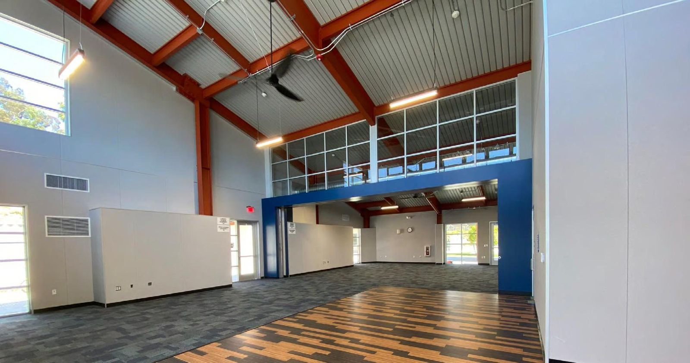

The challenge
[What the district needed]
[2–3 sentences on the problem: enrollment growth, aging portables, deadline.]

The solution
[What was built]
[Model, layout, options chosen, install timeline.]

The result
[Outcome]
[Measurable outcomes and how it's used today.]